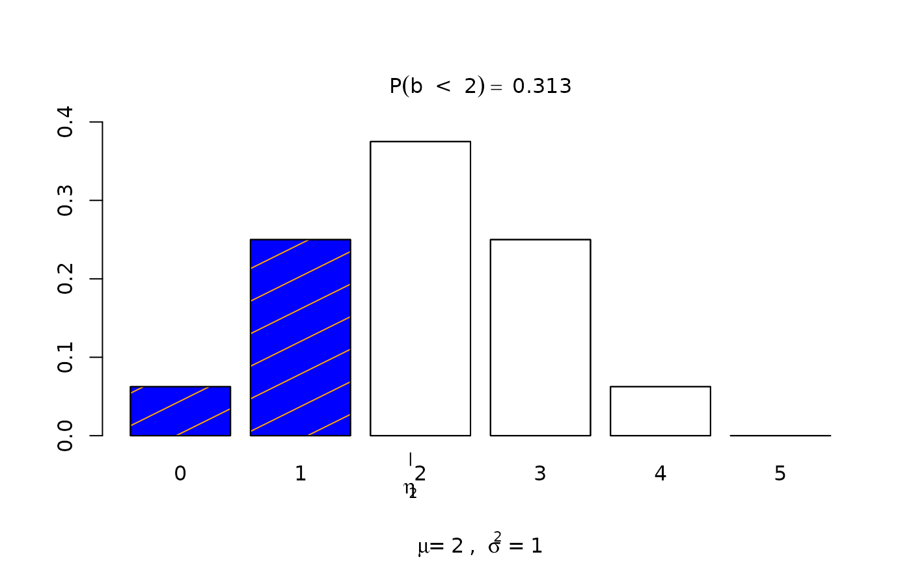
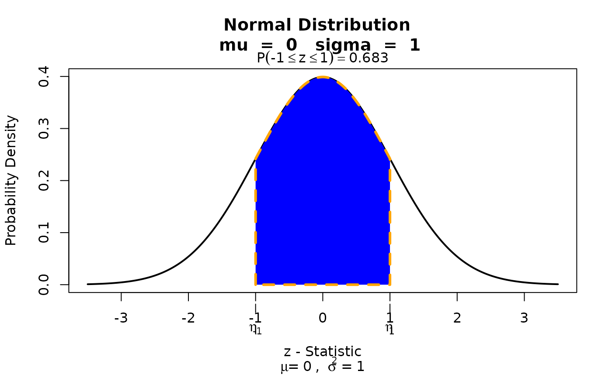
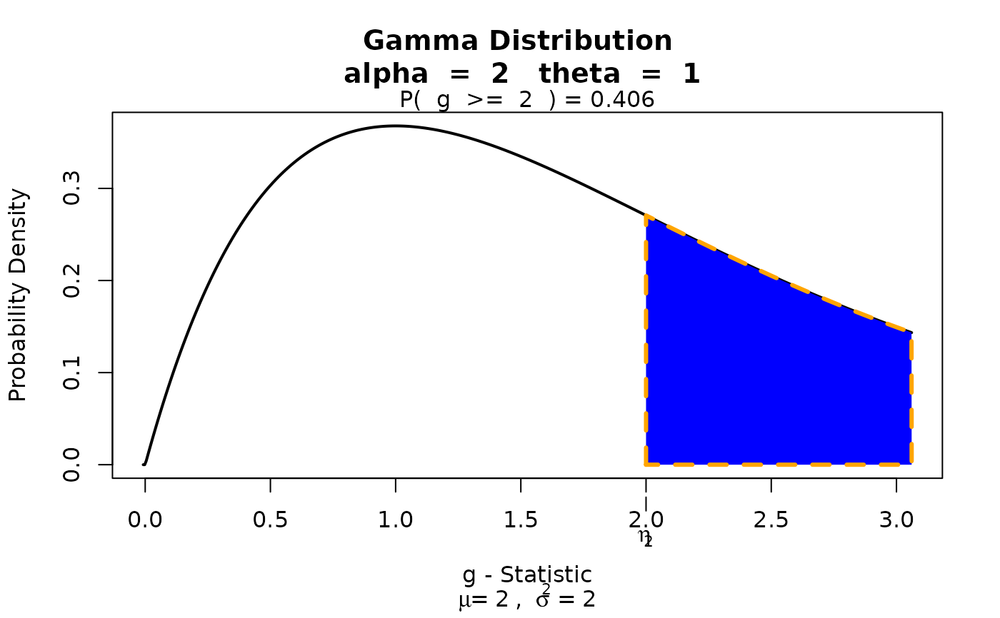

visualize: Graph Probability Distributions with User Supplied Parameters and Statistics
Source:R/visualize-package.R
visualize-package.RdGraphs the pdf or pmf and highlights what area or probability is present in user defined locations. Visualize is able to provide lower tail, bounded, upper tail, and two tail calculations. Supports strict and equal to inequalities. Also provided on the graph is the mean and variance of the distribution.
Author
Maintainer: James Balamuta james.balamuta@gmail.com (ORCID) [copyright holder]
Examples
## visualize.it acts as the general wrapper.
## For guided application of visualize, see the visualize.distr_name list.
# Binomial distribution evaluated at lower tail.
visualize.it(dist = 'binom', stat = 2, params = list(size = 4,prob = .5),
section ="lower", strict = TRUE)
visualize.binom(stat = 2, size = 4, prob =.5, section ="lower", strict = TRUE)

# Set to shade inbetween a bounded region.
visualize.it(dist = 'norm', stat = c(-1, 1), list(mu = 0, sd = 1), section="bounded")
visualize.norm(stat = c(-1, 1), mu = 0, sd = 1, section ="bounded")

# Gamma distribution evaluated at upper tail.
visualize.it(dist = 'gamma', stat = 2, params = list(alpha = 2, theta = 1), section="upper")
visualize.gamma(stat = 2, alpha = 2, theta = 1, section="upper")
